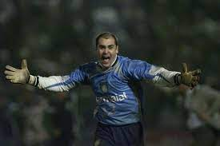

Ademir da Guia
Ademir Ferreira da Guia é um ex-futebolista brasileiro que atuava como meio-campista. É considerado pela torcida e pela imprensa o maior ídolo da história do Palmeiras, no qual foi titular absoluto por mais de dezesseis anos durante a época da chamada "Academia", onde era o craque e a figura central
Dudu
Dudu, um dos maiores ídolos da história do Palmeiras, continua batendo recordes pelo clube. Com a conquista do Campeonato Brasileiro de 2023, o atacante igualou Ademir da Guia e Junqueira como o atleta que mais vezes ganhou títulos com a camisa do Verdão.
Marcos Goleiro
Marcos Roberto Silveira Reis, conhecido apenas como Marcos, é um ex-futebolista brasileiro que atuava como goleiro. Chamado de "São Marcos" devido às suas defesas consideradas "milagrosas", é considerado um dos maiores ídolos da história do Palmeiras e um dos maiores goleiros da história do futebol brasileiro.
